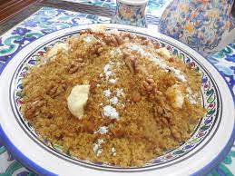

Rfisss
Rfiss is a traditional Algerian pastry made from semolina dough that is shaped into small balls or oblong shapes, dried, baked, and then dipped in warm honey. It is often flavored with cinnamon and anise seeds, and can be garnished with nuts. The result is a sweet and crunchy treat enjoyed in Constantine, Algeria.

Ingedients:
- 2 cups fine semolina
- 1 cup melted butter or vegetable oil
- 1 cup honey
- 1 teaspoon ground cinnamon
- 1 teaspoon ground anise seeds
- 1/4 teaspoon salt
- Almonds, pistachios, or other nuts (optional)
Steps:
- In a large mixing bowl, combine the semolina, melted butter or vegetable oil, ground cinnamon, ground anise seeds, and salt. Mix well until the ingredients are evenly combined.
- Gradually add water while mixing with your hands until the mixture comes together to form a dough. The dough should hold its shape when pressed together.
- Divide the dough into small portions and shape each portion into small balls or oblong shapes.
- Place the shaped dough on a clean surface or a baking sheet lined with parchment paper. Allow the dough to dry and harden for about 1-2 days. This step is important for the texture of the Rfiss.
- Once the dough has dried, preheat the oven to 350°F (175°C).
- Place the dried dough pieces on a baking sheet and bake in the preheated oven for about 15-20 minutes, or until they turn golden brown.
- While the Rfiss is baking, heat the honey in a saucepan over low heat until it becomes warm and runny.
- Remove the baked Rfiss from the oven and immediately dip each piece into the warm honey. Make sure to coat each piece thoroughly.
- Optional: Garnish the Rfiss with almonds, pistachios, or other nuts while the honey is still sticky.
- Allow the Rfiss to cool and the honey to set before serving.